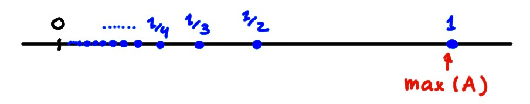
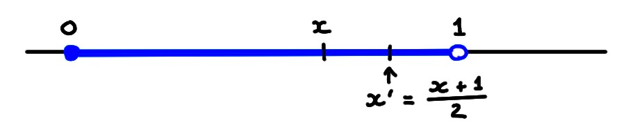
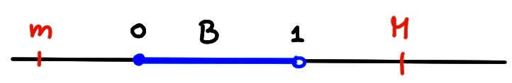

Enfin, passons à la propriété cruciale qui différencie les réels des rationnels.
En particulier, nous verrons comment cette propriété permet
de garantir que dans \(\mathbb{R}\), l'équation \(x^2=2\) possède bel et bien une
solution.
Avant de commencer, il nous faut introduire un peu de terminologie.
Minimum, maximum
L'ordre introduit plus haut sur \(\mathbb{R}\) permet de distinguer certains éléments
d'un sous-ensemble de \(\mathbb{R}\).
Soit \(A\) un sous-ensemble non-vide de \(\mathbb{R}\).
Un élément \(x^*\in A\) est dit maximal si
\( x\leqslant x^*\) \(\forall x\in A \).
On dit aussi que \(x^*\) est le maximum de \(A\), et on note:
\(x^*= \max A\).
Un élément \(x_*\in A\) est dit minimal si
\( x_*\leqslant x\) \(\forall x\in A \).
On dit aussi que \(x_*\) est le minimum de \(A\), et on note:
\(x_*=\min A\).
Si \(A=\{0,-3,-5,2,1\}\), alors \(\max A=2\) et \(\min A=-5\).
On réalise que quand
un ensemble contient un nombre fini d'éléments, il
possède toujours un minimum et un maximum: on les trouve en parcourant la
liste!
Par contre, lorsque l'ensemble possède un nombre infini d'éléments,
l'existence d'un minimum ou maximum n'est pas forcément garantie.
Vu comme sous-ensemble des réels, l'ensemble des entiers
\(\mathbb{N}=\{0,1,2,3,\dots\}\subset \mathbb{R}\)
possède un élément minimal, \(\min \mathbb{N}=0\), mais il
ne possède pas d'élément maximal.
Plus intéressant:
Considérons l'ensemble (la couleur, c'est juste pour voir l'ensemble sur le
dessin du dessous) de tous les nombres de la forme \(x=\frac1n\), où \(n\gt 0\)
est un entier:
\[
A=\bigl\{{\color{blue}
1,\tfrac12,\tfrac13,\tfrac14,\tfrac15,\dots}
\bigr\}
\]
Clairement, \(A\) possède un élément maximum: \(x^*=\max A=1\). En effet,
\(x\leqslant 1\) pour tout \(x\in A\), et de plus \(1\in A\):

Par contre, \(A\) ne possède pas de minimum. En effet, aucun élément de \(A\)
n'est plus petit que les autres.
On a peut-être
envie de dire que le minimum de \(A\), c'est \(x_*=0\), mais \(0\)
n'est pas un élément de \(A\), donc il ne satisfait pas à la définition de
minimum.
Soit \(B=[0,1[\). D'abord, \(B\) possède un minimum, donné par
\(x_*=\min B=0\). En effet, \(0\leqslant x\) pour tout
\(x\in B\), et \(0\in B\).
Par contre, \(B\) n'a pas de maximum.
En effet, pour tout \(x\in B\), il existe toujours un autre élément
\(x'\in B\) tel que \(x'\gt x\). On peut par exemple prendre \(x':=
\frac{x+1}{2}\), qui est le point milieu entre \(x\) et \(1\):

Donc aucun élément de \(B\) n'est maximal.
Majorants, minorants
Soit \(A\subset \mathbb{R}\).
\(A\) est
majoré si il existe \(M\in \mathbb{R}\) tel
que \(x\leqslant M\) pour tout \(x\in A\); on dit qu'un tel \(M\) majore
\(A\), ou que c'est un majorant
pour \(A\).
\(A\) est
minoré si il existe \(m\in \mathbb{R}\) tel
que \(x\geqslant m\) pour tout \(x\in A\);
on dit qu'un tel \(m\) minore \(A\), ou que c'est
un minorant pour \(A\).
Si \(A\) est à la fois majoré et minoré, il est borné.
\(B=[0,1[\) est majoré; \(M=1\), \(M=2\) sont des majorants. En fait, n'importe
quel \(M\geqslant 1\) majore \(B\). \(M=0.9\) n'est pas un majorant; en effet,
si on prend par exemple le point
\(x=0.95\), alors \(x\in B\), et \(x\gt M\).

\(B\) est aussi minoré: n'importe quel réel \(m\leqslant 0\) minore \(B\).
Un ensemble \(A\) est borné si et seulement si il peut être
''rangé dans une boîte'', c'est-à-dire placé à l'intérieur d'un intervalle
\([m,M]\), où \(m\) et \(M\) sont des nombres finis.
Vus comme sous-ensembles de \(\mathbb{R}\),
\(\mathbb{N}\) est minoré puisque \(0\leqslant n\) pour tout \(n\in \mathbb{N}\). Par contre
\(\mathbb{N}\) n'est pas majoré. En effet,
pour tout \(x\in \mathbb{R}\), il existe un \(n\in \mathbb{N}\) tel
que \(n\gt x\).
\(\mathbb{Z}\) n'est ni minoré, ni majoré.
Supremum, infimum
Passons maintenant à la notion essentielle de ce chapitre sur les réels:
Soit \(A\subset \mathbb{R}\) un ensemble non-vide.
Un réel \(s\in \mathbb{R}\) est appelé borne supérieure (ou
supremum) de \(A\) si
\(s\) majore \(A\) (c.-à-d. que \(x\leqslant s\) pour tout \(x\in A\)),
\(s\) est le plus petit majorant de \(A\) (c.-à-d. que
pour tout \(s'\lt s\), il
existe \(x\in A\) tel que \(x\gt s'\)).
Si \(s\) est supremum de \(A\), on le note \(s=\sup A\).
Un réel \(s\in \mathbb{R}\) est appelé borne inférieure (ou
infimum) de \(A\) si
\(s\) minore \(A\) (c.-à-d. que \(x\geqslant s\) pour tout \(x\in A\)),
\(s\) est le plus grand minorant de \(A\) (c.-à-d. que
pour tout \(s'\gt s\), il
existe \(x\in A\) tel que \(x\lt s'\)).
Si \(s\) est l'infimum de \(A\), on le note \(s=\inf A\).
On reformulera souvent la deuxième condition, dans le supremum par exemple, en
disant que pour tout \(\varepsilon\gt 0\) il existe un \(x\in A\) tel que
\[s-\varepsilon\leqslant x\leqslant s\,.\]
(Interprétation ''physique'' de l'infimum et du supremum.)
On a dit qu'un ensemble \(A\) borné peut toujours être
''rangé dans une boîte'' \([m,M]\). Et bien parmi toutes les boîtes qui
contienne \(A\), la plus petite est celle pour laquelle
\(m=\inf A\) et \(M=\sup A\).
Reprenons l'ensemble de tout à l'heure:
\[
A=\bigl\{
1,\tfrac12,\tfrac13,\tfrac14,\tfrac15,\dotsm\tfrac{1}{n},\tfrac{1}{n+1},\dots
\bigr\}\,.
\]
Clairement, \(\sup A=1\). Vérifions que \(\inf A=0\). D'abord, \(0\) minore
\(A\) puisque tout nombre de la forme \(\frac1n\) est supérieur à \(0\).
Ensuite, un nombre \(s'\gt 0\) n'est clairement pas un minorant puisque l'on
peut toujours prendre \(n\) suffisamment grand de façon à ce que \(\frac1n\lt s'\).
Soit encore \(B=[0,1[\).
On a vu que \(B\) n'a pas de maximum; montrons maintenant
que \(\sup B=1\).
Premièrement, on a \(x\leqslant 1\) pour tout \(x\in B\), donc \(B\) est majoré
par \(1\).
Deuxièmement, si \(s'\lt 1\), alors il existe \(x_*\in B\) tel
que \(x_*\gt s\). En effet, si \(s'\lt 0\),
n'importe quel \(x_*\in B\) suffit. Sinon, si
\(0\leqslant s'\lt 1\), on peut par exemple prendre \(x_*:= \frac{s'+1}{2}\).
La différence entre \(\mathbb{R}\) et \(\mathbb{Q}\)
Passons à
l'axiome qui confère à \(\mathbb{R}\) une propriété qui permet de l'utiliser pour
faire de l'analyse:
Dans \(\mathbb{R}\),
tout ensemble non-vide majoré possède un supremum,
tout ensemble non-vide minoré possède un infimum.
Soit \(A\subset \mathbb{R}\) un ensemble non vide.
Si \(M\in \mathbb{R}\) ne majore pas \(A\), cela signifie
[ ] que \(M\) minore \(A\).
[ ] que \(x\lt M\) pour tout \(x\in A\)
[ ] qu'il n'existe aucun \(x\in A\) tel que \(x=M\).
[ ] qu'l existe \(x\in A\) tel que \(x\gt M\).
[ ] que \(A\) contient des éléments arbitrairement grands.
Soit \(A\subset \mathbb{R}\) un ensemble majoré.
Si \(s=\sup A\), cela signifie que
[ ] \(s\) est le plus grand élément de \(A\).
[ ] il existe \(L>0\) tel que \(x\geqslant s-L\) pour tout \(x\in A\).
[ ] tout \(M\geqslant s\) majore \(A\).
[ ] \(s\in A\).
[ ] \(s\not\in A\).
[ ] l'ensemble \(\{M\in \mathbb{R}\,:\,M\text{ majore }A\}\) possède un minimum.
[ ] l'ensemble \(\{M\in \mathbb{R}\,:\,M\text{ majore }A\}\) est majoré.